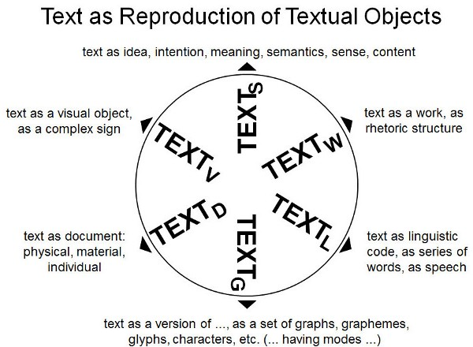
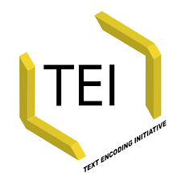
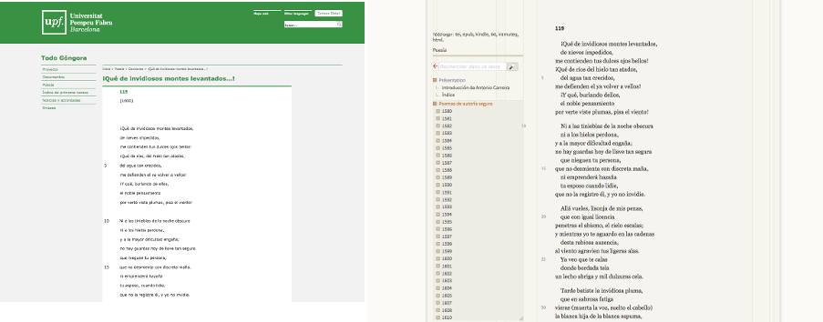
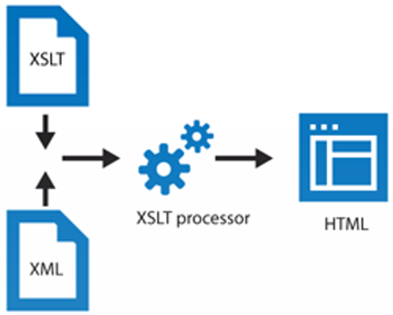

Workshop
Edición digital y análisis cuantitativo de textos poéticos del Siglo de Oro
Antonio Rojas Castro
Università di Verona
29-30 de noviembre y 6-7 de diciembre de 2017

Sesiones
- 29/11/2017: Introducción a la edición académica digital
- 30/11/2017: Ejercicios prácticos de codificación TEI
- 06/12/2017: Ejercicios prácticos de transformación XSLT
- 07/12/2017: Introducción a Stylo (clasificación y palabras distintivas)
Objetivos generales
- 1. Codificar con TEI textos poéticos del Siglo de Oro español en doble presentación, con notas y aparato de variantes.
- 2. Realizar transformaciones sencillas de documentos XML/TEI en formato HTML con hojas de estilo XSLT.
- 3. Utilizar las principales funcionalidades de la herramienta Stylo con el objetivo de analizar textos literarios.
Sesión 1
¿Qué vamos a aprender hoy?
- 1.1 Introducción a la edición académica digital
- 1.2 El lenguaje de marcado
- 1.3 La codificación TEI
- 1.4 Editar con Oxygen y conocer las Guidelines
1.1 Introducción a la edición académica digital
El medio electrónico
- Audiencia mayor
- No tiene las restricciones del papel en cuanto a la escala.
- Las publicaciones son interactivas.
- Incorpora contenido multimedia y hiperenlaces.
- Incrementa la velocidad con que actualizamos los contenidos.
- Desplaza el coste desde la publicación (impresión en papel) a la creación y mantenimiento de los recursos.
Características del texto digital
- 1. Intercambio de datos y búsquedas federadas.
- 2. Reutilización de datos y textos con otros propósitos.
- 3. Mantenimiento y preservación de los textos a largo plazo a través de copias distribuidas.
Características texto digital
- 4. A partir de una sola fuente (input), se pueden generar múltiples documentos (output):
- diferentes medios (web, móvil, PDF)
- modalidades de edición (paleográfica, modernizada, con aparato de variantes)
- filtros (índices, tablas de contenidos)
Tareas del editor académico
- Buscar
- Cotejar
- Transcribir
- Modernizar
- Corregir
- Anotar
- Explicar
- Difundir
El editor como intermediario
En la era digital, el/la editor/a sigue siendo necesario porque los textos pueden contener errores y porque deben explicarse teniendo el contexto de producción.
Las teorías editoriales tradicionales (edición crítica, filología de autor, crítica génetica, etc.) siguen siendo útiles para establecer textos.
Nuevas tareas: modelar, codificar, transformar y publicar.
Modelar
Cuando hacemos explícita la estructura de un documento decimos que lo estamos modelado.
El proceso conlleva una serie de acciones como análisis, selección y representación.
No hay modelado neutral
¿Qué propiedades textuales te interesan? ¿Qué relaciones puedes establecer entre dichas propiedades textuales? ¿Cuáles son sus atributos?
No hay modelado neutral
Etiquetar un texto con lenguaje de marcado es un acto interpretativo.
Todos somos hijos de nuestra época, cargamos con una experiencia editorial concreta, disponemos de recursos limitados y tenemos intereses muy específicos.
¿Preguntas? ¿Dudas?

1.2. El lenguaje de marcado
¿Qué lenguajes de marcado conoces?
¿Algunos nombres?
Dos tipos de lenguaje de marcado
- Presentacional: visualiza el aspecto de un texto:
Edición digital y análisis cuantitativo... - Descriptivo: representa el contenido de un texto:
Edición digital y análisis cuantitativo...
El lenguaje de marcado descriptivo
- Separa el contenido de un texto de su aspecto a fin de facilitar la reutilización de la información.
- Permite realizar cambios sobre el aspecto en una colección de textos.
Hello, XML!
- XML es un lenguaje de marcado descriptivo que sirve para estructurar datos en forma de documento.
- Se distingue de HTML en tres aspectos:
- XML es extensible
- XML debe estar bien formado
- XML puede validarse con un esquema
- XML requiere el uso de textos en Unicode (ISO 10646), es decir, UTF-8 o UTF-16.
- Es una versión más simple del lenguaje SGML publicada en 1998.
¿Qué aspecto tiene un documento XML?
Información sobre el documento
Comentario de texto
Estrofas del poema
Notas
Bibliografía
Sintaxis del XML
- Un documento XML debe contener al menos un elemento.
- Elemento XML = etiqueta de inicio + contenido (opcional) + etiqueta de cierre
- El contenido del elemento puede ser una cadena de caracteres Unicode o bien otros elementos.
- Un elemento puede contener uno o más atributos; los atributos consisten en un nombre y un valor determinado.
- Un documento XML también puede contener otros componentes como instrucciones de procesamiento, comentarios y referencias a entidades (entity references).
Un documento XML está bien formado cuando...
- solo hay un único elemento raíz;
- todos elementos se anidan unos en otros formando una estructura arbórea contenida en el elemento raíz;
- todos nombres de los elementos y atributos están escritos correctamente (XML distingue entre mayúscula y minúscula);
- todos los elementos contienen una etiqueta de apertura y de cierre;
- los valores de los atributos están entrecomillados.
La declaración XML
Se sitúa al inicio del documento y sirve para...
- especificar que se trata de un documento XML;
- especificar la versión XML utilizada;
- especificar qué codificación de caracteres se está empleando.
La declaración XML
Información sobre el documento
Comentario de texto
Estrofas del poema
Notas
Bibliografía
Algunas particularidades...
- Los caracteres especiales como < y & no pueden representarse como tal sino utilizando entidades.
- Las entidades se delimitan con & y ;
- Podemos añadir comentarios, pero para que no se interpreten como XML deben estar delimitados por
¿Preguntas? ¿Dudas?
1.3 La codificación TEI
¿Qué es?
- La Text Encoding Initiative (TEI) es un modelo abstracto con el que es posible representar textos académicos en formato digital cuyos orígenes se remontan a 1987.
- Las Guidelines de la TEI es una publicación que consta de 23 capítulos; cada capítulo cubre un módulo, es decir, un grupo de elementos y atributos.
La primera versión es de 1994; actualmente utilizamos la quinta versión o P5.
Las Guidelines son modulares y adaptables a cada proyecto.
¿Preguntas? ¿Dudas?
Componentes principales de un documento TEI
- Un documento TEI contiene un elemento TEI con datos y metadatos.
- Los metadatos se hallan en el elemento teiHeader.
- Los datos (en nuestro caso el texto poético) se hallan en el elemento text.
Estructura básica de un documento TEI
Título de la edición
Información sobre la publicación
Información sobre la fuente de la que deriva el texto.
El poema va aquí
¿Qué entendemos por "metadatos"?
- A menudo se definen como "datos sobre los datos".
- Los metadatos son datos sobre los datos, el contexto o la estructura de los recursos electrónicos.
- Equivalen (más o menos) a la página de créditos de un libro impreso.
¿Por qué son importantes los "metadatos"?
- Permiten la identificación, la recuperación, el uso, la gestión y la preservación de nuestros recursos electrónicos.
- Enriquecen con información adicional los recursos electrónicos.
- Granularidad: pueden describir una colección de objetos, un recurso aislado o bien un componente dentro de una colección más grande.
¿Quién suele utilizar "metadatos"?
- Los bibliotecarios utilizan metadatos (casi siempre en formato MARC) para identificar recursos de manera estable y para declarar la licencia con que se publican.
- Los investigadores utilizan metadatos para identificar la fuente de la que derivan los recursos y para crear aplicaciones webs que filtren el contenido de acuerdo a determinados metadatos.
Algunos estándares de metadatos
- DCMI = Dublin Core Metadata Initiative
- RDF = Resource Description Framework
- EAD = Encoded Archival Description
- METS = Metadata Encoding and Transcription Standards
- OAIS = Open Archival Information
- OAI-PMH = Open Archives Initiative-Protocol for Metadata Harvesting
Los metadatos en TEI
- TEI proporciona un vocabulario más rico que EAD y DCMI y menos abstracto que otros estándares como RDF.
- Según TEI, los metadatos que describen un recurso deben formar parte del mismo recurso y aparecer en el encabezado, es decir, la primera parte del documento TEI (teiHeader).
- El encabezado TEI puede contener varios párrafos de prosa libre o bien una serie de elementos que contienen otros elementos.
Componentes principales del teiHeader
- fileDesc (file description) contiene una descripción bibliográfica completa sobre el recurso electrónico.
- encodingDesc (encoding description) documenta la relación entre el texto electrónico y la fuente de la deriva (por ejemplo, intervenciones editoriales).
- profileDesc (text-profile description) proporciona una descripción detallada de los elementos no bibliográficos del texto (por ejemplo, idioma, contexto de producción, personas mencionadas, palabras clave, etc.)
- revisionDesc (revision description) contiene un resumen del historial de cambios del archivo electrónico.
¡Solo el fileDesc es obligatorio!
El resto de elementos son opcionales.
Componentes principales del fileDesc
Algunos son obligatorios:
- titleStmt proporciona un título al recurso y declara quién es el responsable de la edición.
- sourceDesc documenta la fuente de la que deriva el texto electrónico.
- publicationStmt registra el modo en que el texto se publica o distribuye.
Componentes principales del fileDesc
Otros son opcionales:
- editionStmt documenta el número de la edición (1a, 2a, etc.)
- seriesStmt registra si el recurso forma parte de una serie de publicaciones.
- extent contiene información sobre el tamaño del recursos (bytes, discos, etc.).
- notesStmt proporciona información adicional en forma de nota.
Estructura básica del teiHeader
Información sobre el título, el autor y el editor de la edición digital
Información sobre la edición digital
Información sobre quién es responsable de la publicación
Información sobre las fuentes de las qu deriva el texto
¿Preguntas? ¿Dudas?
Componentes principales de text
- El texto se puede dividir en tres partes:
- front (preliminares) contiene material preliminar (resúmenes, portadas, dedicatorias, comentarios, prólogos) que se encuentral al inicio de un documento, antes del texto principal.
- body (cuerpo de texto) contiene el texto principal (por ejemplo, el poema)
- back (anexo) contiene material suplementario situado tras el texto principal.
- Cada una de estas tres partes se pueden dividir con elementos div, por ejemplo, para contener capítulos, partes o secciones.
Componentes principales de text
Contiene información preliminar como una Introducción al poema.
Contiene la primera parte del poema.
Contiene la segunda parte del poema.
Contiene la tercera parte del poema.
Contiene anexos como glosarios o bibliografía.
¿Cuándo debería codificar mis textos con TEI?
Antes de empezar a codificar con TEI, conviene analizar en detalle los textos y definir los objetivos.
Codificar con TEI no es díficil pero sí requiere tiempo, esfuerzo y, sobre todo, mano de obra (aunque el etiquetado puede automatizarse en parte).
Si solo quieres publicar textos en internet y no te preocupa la preservación o el procesamiento de los archivos, utiliza HTML para representar el contenido; es mucho más simple y directo (pero también limitado).
¿Cuándo debería codificar mis textos con TEI?
Utiliza la codificación TEI si...
- Necesitas un vocabulario rico y variado para describir propiedades textuales o metadatos.
- Necesitas validar tus documentos con un esquema a fin de controlar el vocabulario y la sintaxis.
- Necesitas procesar y transformar tu documento XML en distintos documentos XML o HTML.
- Quieres utilizar herramientas que requieren un documento TEI como fuente.
¿Preguntas? ¿Dudas?
¿Cuál de estos proyectos utiliza la codificación XML-TEI?
1.4. Editar con Oxygen y conocer las Guidelines
Ejercicio 1
Correción de un documento XML
Ejercicio 2
Explora las Guidelines
Conclusiones... preguntas... ¿debate?
Sesión 2
¿Qué vamos a aprender hoy?
- 2.0 Materiales y fuentes
- 2.1 El encabezado TEI en detalle
- 2.2 El texto poético
- 2.3 El comentario de texto
- 2.4 La anotación del poema
- 2.5 El aparato de variantes
- 2.6 Validación con esquemas
2.0 Materiales y fuentes
Edición digital de las Soledades de Luis de Góngora (2017)
- Cotejo manual de 16 manuscritos y 5 impresos.
- Codificación TEI de dos archivos (input): edición anotada y edición con aparato de variantes.
- La edición anotada se publica como web estática (HTML) utilizando Bootstrap.
- La edición con aparato de variantes se publica con EVT2.
Canciones y otros poemas en arte mayor de Luis de Góngora (1990)
- Edición crítica, notas y comentarios de José María Micó
- Cotejo manual de 17 manuscritos y 10 impresos.
- Hay versión en línea publicada por Todo Góngora, pero sin notas ni aparato de variante (2011).
Tres niveles de texto.
Texto en prosa con abudantes citas, referencias y menciones.
2.1 El encabezado TEI en detalle
El teiHeader es el lugar del archivo XML en el que se recogen los metadatos, es decir, toda aquella información que permite identificar un documento digital y declarar cuál es la fuente de la que deriva el texto. En esta parte del archivo, además, se pueden registrar otro tipo de información suplementaria como los criterios editoriales, el tipo de texto o datos relativos a la creación de la obra desde un punto de vista intelectual.
Descripción del archivo
El elemento fileDesc contiene una serie de elementos con información bibliográfica sobre el archivo electrónico necesaria para su citación y catalogación.
Título
Se inicia con el elemento titleStmt en donde se sitúa el título de la edición digital, el autor del texto codificado, el editor y la agencia que financia el proyecto:
Soledades. Edición digital anotada
Luis de Góngora
Edición, codificación y diseño gráfico de
Antonio Rojas Castro
Ministerio de Economía y Competitividad. Todo Góngora II [I+D+I FFI2010-17349]
Edición
Con el elemento edition, contenido en editionStmt, es posible registrar el número de la edición:
Septiembre de 2017
Publicación
Con publicationStmt se proporciona información sobre qué sujeto, institución o grupo publica el archivo electrónico y bajo qué licencia se puede acceder a él y utilizar:
Cologne Center for eHumanities (CCeH)
Köln
Publicado bajo una licencia Creative Commons Atribución-NoComercial 3.0
Descripción de las fuentes
El último elemento que contiene el fileDesc corresponde al sourceDesc. Se trata de un elemento obligatorio y en el caso de una edición crítica digital es el más importante porque se utiliza para registrar las fuentes de las que deriva el archivo electrónico.
El elemento sourceDesc puede contener simplemente un elemento bibl con la referencia bibliográfica o bien una lista identificada con listWit con descripciones de manuscritos e impresos representados utiliznado el elemento witness.
Descripción de las fuentes
España
Madrid
Biblioteca Nacional de España
Fondo reservado
Res/45, 1
Obras de don Luis de Góngora reconocidas y comunicadas con él por don Antonio Chacón Ponce de León, señor de Polvoranca
Manuscrito Chacón
¿Preguntas? ¿Dudas?
Ejercicio 1.
Completa la información del teiHeader del archivo "edicion.xml" situado en la carpeta "ejercicios".
2.2 El texto poético
Títulos y partes
El texto de las Soledades se sitúa en el elemento body, que contiene un elemento head (el título de la obra) y tres elementos div correspondientes a las tres partes del poema: Dedicatoria, Soledad primera y Soledad segunda
Títulos y partes
Soledades
[Dedicatoria]
[Texto de la Soledad primera]
[Texto de la Soledad segunda]
Estrofas y versos
El manuscrito Chacón no introduce líneas en blanco para separar las estrofas, pero esto no quiere decir que no haya grupos de versos de extensión variada; de hecho, se pueden identificar grupos mediante el sangrado.
La TEI recomienda el uso lg (grupo de versos) para representar grupo de versos que funcionan como una unidad formal, por ejemplo, una estrofa, pero también un refrán, un estribillo, etc.
Estrofas y versos
Los versos se codifican con la etiqueta l (en inglés, line).
La TEI define este elemento desde el punto de vista métrico y no tipográfico
Tres atributos son muy importantes:
- @xml:id: identifica el elemento con un código único (por ejemplo, v-00001.
- @n: sirve para numerar un elemento.
- @rend: contiene información sobre cómo aparece el elemento en el documento original.
Estrofas y versos
Qve de inuidiosos montes leuantados
De nieues impedidos
Me contienden tus dulces ojos bellos!
Que de rios, del yelo tan atados,
De’l agua tan crecidos
Me defienden el ia boluer á vellos!
I que burlando de’llos
El noble pensamiento,
Por verte viste plumas, pisa el viento!
Saltos de página
Es posible representar la estructura del documento, es decir, la paginación o foliación original.
El elemento TEI con el que se identifican los saltos de páginas es pb (en inglés, page break) y se trata de uno de los pocos elementos vacíos permitidos. Es decir, este elemento no contiene texto.
El elemento pb se sitúa siempre al inicio de una página.
Saltos de página
El elemento pb puede contener atributos @ed (con el que se referencia la edición que se sigue), @n (para registrar el número de página o folio) y @facs (contiene un enlace a un archivo de imagen).
Transcripción paleográfica y modernización
Es posible editar un texto con doble presentación: por un lado, la transcripción paleográfica, que conserva la mayoría de rasgos característicos de la ortotipografía de un documento (en el caso de Góngora, el manuscrito Chacón); por el otro, una modernización de la ortografía, los signos de puntuación y otros aspectos tipográficos del texto del siglo XVII.
Transcripción paleográfica y modernización
El elemento definido por la TEI para agrupar codificaciones alternativas se llama choice. Esta etiqueta contiene una pareja de elementos:
- orig: contiene el texto original tal y como aparece en el documento.
- reg: contiene la regularización propuesta por la editora.
Transcripción paleográfica y modernización
¡
Ô
oh
DVQVE
duque
esclarecido!
,
Si el contenido de orig o reg está vacío podemos insertar el elemento y dejarlo así, o bien no insertarlo y solo presentar una de las alternativas.
Abreviaturas y expansiones
Para representar abreviaturas y expansiones también se utiliza el elemento choice.
Ahora bien, los elementos que se anidan en choice ahora son:
- abbr: contiene una abreviatura tal y como aparece en el documento.
- expan: contiene una expansión propuesta por la editora.
Abreviaturas y expansiones
O
o
filos
pongã
pongan
de homicida hierro
¿Preguntas? ¿Dudas?
Ejercicio 2.
Codifica el texto poético
2.3 El comentario de texto
Un texto en prosa situado en los preliminares
Para diferenciar el comentario del poema, es conveniente utilizar el elemento front.
Los textos en prosa se componen de una serie de párrafos que se codifican con el elemento p.
Los párrafos
Dentro de p, se pueden encontrar otros elementos que conviene identificar:
- title: contiene títulos de obras.
- hi: marca una palabra o frase gráficamente diferente del resto del texto que la circunda, por causas sobre las que no se hace ninguna declaración.
- mentioned: marca palabras o locuciones mencionadas, no usadas.
- quote: contiene una frase o pasaje atribuido por el narrador o autor a un agente externo al texto.
- foreign: identidica una palabra o frase perteneciente a otra lengua distinta de la del resto del texto en que se incluye.
Los párrafos
Desde Salcedo Coronel («Escribió don Luis esta Canción hallándose ausente de alguna dama casada a quien servía»), las interpretaciones biográficas han desfigurado el verdadero sentido de
la composición. Despreocupándose de toda verosimilitud cronológica (cfr. R. Jammes, pág. 312, n. 51 [372]), Artigas vio aquí «el canto del cisne» de un supuesto amor juvenil (pág. 49), y
la crítica posterior ha dado casi siempre por segura la existencia de unos esposos de carne y hueso amigos o conocidos del poeta. Está claro que el modelo principal «es Tasso, y
precisamente el Tasso epitalámico» (D. Alonso,
Góngora y el «Polifemo» , II, pág. 203); sin embargo, no creo que ello nos obligue a pensar que «esta canción es, en realidad,
un epitalamio» (ibid., pág. 201). Don Luis no partió necesariamente de un hecho real, sino de una serie de 'hechos' y motivos literarios con los que «comienza ... a
definirse el clima poético que será el del Polifemo » (R. Jammes, pág. 356 [424]). Tampoco me parece exacto el tema propuesto por R. P. Calcraft: «the passion of jealousy and its
resolution in the mind of a lover who has lost the object of his affections» («The lover as Icarus», pág. 11). La canción ha merecido excelentes comentarios de Juan Ferraté y, más recientemente,
Giulia Poggi (recogidos ambos en la bibliografía); observaciones menos valiosas pueden leerse en La fragua de las «Soledades» , págs. 59-102.
¿Preguntas? ¿Dudas?
Ejercicio 3.
Codifica el comentario de texto
2.4 La anotación del poema
Las notas
Con el elemento note es posible insertar una nota o aclaración.
Los tres atributos más importantes aceptados en este elemento:
- @type: establece una tipología de notas, por ejemplo, "editorial" o "aclaratoria".
- @resp: identifica el responsable de la nota.
- @n: contiene una numeración.
El elemento l puede contener otros elementos como p, l, mentioned, etc.
Las notas
En el caso de los textos poéticos, conviene insertar las notas dentro del elemento l:
al cóncavo ajustando de los cielos
La versión primitiva de este pasaje era:
al pespuntar de los cielos
las agujas que ilustran tu edificio:
Los testimonios que la transmiten son Rm y O. El manuscrito Pérez de Ribas también contiene esta versión pero tachada y sustituida por la definitiva. En el segundo verso el manuscrito O transmite un pequeño error de copia: su edificio . Puesto que no están en ninguno de los manuscritos cotejados por Alonso, estos versos no se imprimieron en 1936; Jammes, en cambio, sí los imprimió.
¿Preguntas? ¿Dudas?
Ejercicio 4.
Codifica las notas del poema.
2.5 El aparato de variantes
El aparato de variantes
Con el elemento app se representa una entrada del aparato crítico, que puede contener:
- lem: la lección preferida o correcta;
- rdg: las variantes.
El aparato de variantes
El elemento rdg acepta algunos atributos importantes como:
- @wit: identifica el testimonino en que se encuentra la variante con un indentificador contenido en el teiHeader;
- @type: establece una tipología de variantes (por ejemplo, omisión, transposición, adición, etc.).
- @resp: identifica al responsable de la identificación de la variante (solo es útil si hay más de un editor).
El aparato de variantes
La TEI define tres maneras de codificar variantes:
- método de localización referenciada;
- método de adjunción de doble;
- método de segmentación paralela.
Con el método de segmentación paralela el aparto se inserta directamente en el texto; los otros dos métodos sitúan las variantes en una sección distinta y emplean enlaces para conectar texto y variantes.
El aparato de variantes
Era del año la estación
florida
floria
primera
El aparato de variantes
Es posible codificar más de una palabra y representar fenómenos como tachones y adiciones (por ejemplo, correcciones realizadas por el copista):
escollo, el metal ella fulminante
escollo, el metal ella fulminante
escollo, metal ella fulminante
escollo, el metal ella ful
gente
minante
El aparato de variantes
Si la variación consiste en una adición, podemos dejar el lema vacío:
por absolverle escrúpulos al vaso),
por absolverle escrúpulos al vaso),
¿Preguntas? ¿Dudas?
Ejercicio 5.
Codifica el aparato crítico del poema.
2.6 Validación con esquemas
Validación con esquemas
Un documento XML debe estar bien formado (respetar la sintaxis), pero también debería ser conforme a una serie de reglas adicionales; estas reglas se definen en los esquemas.
Los esquemas están escritos en lenguaje formal (también en XML).
Hay muchos tipos de esquemas; los más populares son DTD, RELAXNG o Schematron.
Validación con esquemas
Los esquemas nos permiten especificar:
- qué elemento puede ser el elemento-raíz;
- qué elemento y atributos pueden haber en un documento XML;
- qué valores pueden contenecer ciertos elementos y atributos.
¿Preguntas? ¿Dudas?
Ejercicio 6.
Valida tu documento XML con un esquema.
Conclusiones... preguntas... ¿debate?
Sesión 3
¿Qué vamos a aprender hoy?
- 3.1 ¿Qué es XSLT?
- 3.2 Anatomía de un documento HTML
- 3.3 La instrucción xsl:value-of
- 3.4 La instrucción xsl:for-each
- 3.5 La instrucción xsl:template
3.1 ¿Qué es XSLT?
3.1 ¿Qué es XSLT?
XSLT significa Extensible Stylesheet Language.
Es un lenguaje utilizado para transformar información contenida en documentos XML en formato HTML, PDF o TXT.
Se puede utilizar para presentar documentos XML, pero en la práctica sirve principalmente para modificar y añadir información.
3.1 ¿Qué es XSLT?
Con XSLT se utiliza el lenguaje XPath para seleccionar partes de un documento XML a fin de procesarlo o realizar cálculos.
XSLT y XPath se conviertieron en lenguajes recomendados por el W3C en 1999.
Actualmente, la versión más extendida es XSLT 2.0 (ya hay una tercera versión, pero poco utilizada aún).
3.1 ¿Qué es XSLT?
Para poder transformar un documento XML con XSLT, se necesitan tres cosas:
- uno o varios documentos XML (input);
- uno o varios documentos XSLT;
- un procesador XSLT (por ejemplo, el que tenemos en Oxygen).
El resultado de este proceso (por ejemplo, una página HTML) se suele llamar output.
3.1 ¿Qué es XSLT?
3.1 ¿Qué es XSLT?
Un hoja XSLT contiene elementos que proceden de distintos lenguajes de marcado.
Para distinguir los vocabularios, es necesario utilizar namespaces.
La declaración namespace asocia un prefijo con una URI (por lo común, una URL como "https://www.w3.org/1999/XSL/Transform").
3.1 ¿Qué es XSLT?
El procesador XSLT lee cada uno de los elementos; si alguno contiene dos puntos (:), identifica el prefijo con el namespace que se encuentra en la declaración.
El namespace de XSLT es xsl.
3.1 ¿Qué es XSLT?
El elemento raíz de un documento XSLT es xsl:stylesheet.
Dentro de este elemento, hay una serie de instrucciones que seleccionan una parte específica del documento XML y la procesan de una manera determinada.
Las instrucciones (en inglés, template) son una serie de reglas que definen cómo una parte del input debe procesarse a fin de obtener el output deseado.
3.1 ¿Qué es XSLT?
Las instrucciones se declaran mediante el elemento xsl:template.
Este elemento contiene un atributo @match que indica qué parte del documento XML input debe procesarse con el contenido de la instrucción.
¿Preguntas? ¿Dudas?
3.2 Anatomía de un documento HTML
3.2 Anatomía de un documento HTML
Para transformar un documento XML en un documento HTML necesitamos crear un archivo HTML que contenga un elemento html.
Como un documento XML, nuestro documento HTML debe contener un encabezado (head) con metadatos y el texto en sí (body).
3.2 Anatomía de un documento HTML
Normalmente, el elemento body suele contener:
- el menú de navegación (se suele utilizar el elemento nav);
- una o varias divisiones, en donde se suele poner texto o imágenes (cada parte se marca con un div);
- y un pie con información sobre la web (elemento footer).
3.3 La instrucción xsl:value-of
3.3 La instrucción xsl:value-of
La instrucción xsl:value-of se utiliza para recuperar el valor de un elemento específico.
Para ello, es necesario utilizar el atributo @select.
El procesador incluye en el documento HTML la información contenida en el elemento seleccionado.
El contenido del atributo @select debe ser una expresión XPath.
3.3 La instrucción xsl:value-of
3.3 La instrucción xsl:value-of
¿Preguntas? ¿Dudas?
3.4 La instrucción xsl:for-each
3.4 La instrucción xsl:for-each
Para transformar un elemento de manera reiterativa y secuencial, hay que usar la instrucción xsl:for-each.
Esta instrucción también tiene un atributo @select con el que se identifica el elemento que se debe procesar más de una vez.
Dentro de la instrucción xsl:for-each, se pueden poner otras instrucciones que se ejecutarán en cada repetición.
3.4 La instrucción xsl:for-each
Para identificar el elemento que se quiere procesar, conviene saber la diferencia entre dos expresiones XPath:
- Ruta absoluta: empieza con / y apunta hacia el elemento con que empieza el documento XML.
- Ruta relativa: se evalúa a partir del contexto en que aparece la instrucción, es decir, a partir del nodo contextual.
3.4 La instrucción xsl:for-each
Se puede generar automáticamente el valor de los atributos utilizando el attribute value template.
Simplemente, en un atributo introduce dos paréntsis curvos ({}) una expresión XPath para seleccionar el valor del elemento o atributo contenido en el documento XML.
Por ejemplo:
3.4 La instrucción xsl:for-each
(
)
¿Preguntas? ¿Dudas?
3.5 La instrucción xsl:template
3.5 La instrucción xsl:template
Cuando un procesador XSLT lee un documento XML, produce una representación del XML en forma de árbol (o jerarquía de elementos).
Al inicio del elemento XML se halla el elemento raíz (en inglés, root element) que contiene todos los elementos.
3.5 La instrucción xsl:template
La relación entre los elementos de un documento XML se describe en términos familares:
- Hijos: son elementos directos contenidos por un elemento.
- Descendientes: son todos los elementos contenidos por un elemento.
- Padre: es el elemento directo que contiene otros elementos.
- Ancestros: son todos los elementos que contienen otros elementos.
3.5 La instrucción xsl:template
Procesar un documento XML como si fuera un árbol es útil porque nos podemos concentrar en una parte del documento (o rama del árbol) de manera específica.
Para seleccionar un solo elemento utiliza tantos xsl:template como necesites.
Dentro puedes situar la instrucción xsl:apply-templates si quieres procesar todos los templates contenidos en la hoja XSLT.
O bien instrucciones como xsl:value-of o xsl:for-each.
3.5 La instrucción xsl:template
La instrucción xsl:apply-templates tiene un atributo @select que indica al procesador qué elemento hay que procesar.
Si bien el lugar en donde se sitúa la instrucción xsl:template es irrelevante, no ocurre lo mismo con xsl:apply-templates porque el output se situará allí mismo.
Si el procesador no encuentra un xsl:template para un determinado elemento, simplemente recupera el valor y lo pasa al output.
3.5 La instrucción xsl:template
Un ejemplo de xsl:template que contiene un xsl:apply-templates
3.5 La instrucción xsl:template
Un ejemplo de xsl:template que no contiene un xsl:apply-templates
3.5 La instrucción xsl:template
¿Cuándo utilizar xsl:template, xsl:value-of o xsl:for-each?
Utiliza xsl:template si elemento seleccionado puede contener otros elementos que deben ser procesados.
Utiliza xsl:template si quieres crear una hoja XSLT modular porque las instrucciones son fáciles de mantener y actualizar.
3.5 La instrucción xsl:template
¿Cuándo utilizar xsl:template, xsl:value-of o xsl:for-each?
Utiliza xsl:value-of si sabes que el elemento seleccionado no contiene otros elementos y solo quieres "pasar" el valor al output.
Utiliza xsl:value-of si tienes muchos elementos que procesar y necesitas optimizar la transformación.
Utiliza xsl:value-of si quieres cambiar la estructura de un documento.
¿Preguntas? ¿Dudas?